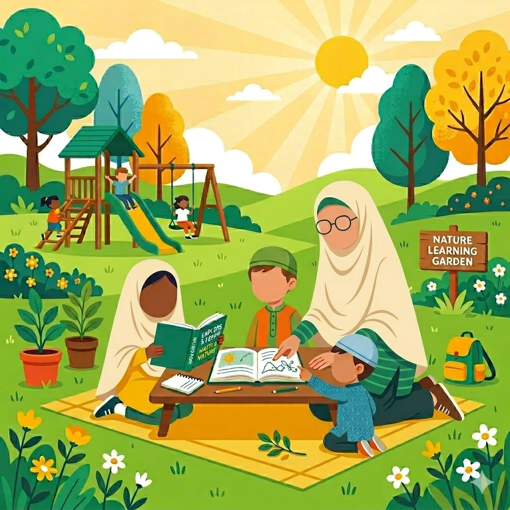

A Buana Studios Initiative.Sebuah Inisiatif Buana Studios.
We build meaningful afterschool activities and outdoor experiences that help youth grow, step away from passive scrolling, and build real confidence. Kami membangun aktivitas pascasekolah dan pengalaman luar ruangan yang membantu pemuda tumbuh, menjauh dari sekadar menggulir layar, dan membangun kepercayaan diri sejati.
Grammar on paper is easily forgotten. At Buana Active, English and Arabic are seamlessly woven into every hike, swim, and martial arts session through active, natural conversation. Tata bahasa di atas kertas mudah dilupakan. Di Buana Active, bahasa Inggris dan Arab ditenun secara mulus ke dalam setiap sesi pendakian, renang, dan seni bela diri melalui percakapan alami yang aktif.
Every child grows at their own pace. If a child is shy, we don't punish them with a low grade. Instead, mentors track Behavioral Milestones using our internal systems. Setiap anak tumbuh dengan kecepatannya sendiri. Jika seorang anak pemalu, kami tidak menghukum mereka dengan nilai rendah. Sebaliknya, mentor melacak Milestone Perilaku menggunakan sistem internal kami.
You will receive qualitative reports detailing their confidence, character (Adab), and conversational courage in real-world scenarios. We measure if they have the confidence to lead, not just if they can spell. Anda akan menerima laporan kualitatif yang merinci kepercayaan diri, karakter (Adab), dan keberanian percakapan mereka dalam skenario dunia nyata. Kami mengukur apakah mereka memiliki kepercayaan diri untuk memimpin, bukan hanya apakah mereka bisa mengeja.
Mentor Observational LogLog Observasi Mentor

Character isn't built by just reading about courage. It is built by standing at the edge of a cold pool at 6 AM, or navigating a mountain trail alongside mentors who care. Karakter tidak dibangun hanya dengan membaca tentang keberanian. Ia dibangun dengan berdiri di tepi kolam yang dingin pada jam 6 pagi, atau menavigasi jalur pegunungan bersama mentor yang peduli.
Buana Active is just one part of a much larger ecosystem. Discover the other studios driving our vision forward. Buana Active hanyalah satu bagian dari ekosistem yang jauh lebih besar. Temukan studio lain yang mendorong visi kami maju.
Buana Active is a highly-focused, boutique ecosystem curated by one Lead Mentor. Core disciplines are taught directly, while specialized skills (Aikido, Climbing) are led by carefully selected Ecosystem Partners. Quality over quantity. Buana Active adalah ekosistem eksklusif yang sangat fokus yang dikurasi oleh satu Mentor Utama. Disiplin inti diajarkan langsung, sementara keterampilan khusus dipimpin oleh Mitra Ekosistem terpilih. Kualitas di atas kuantitas.
To maintain this boutique quality without burnout, all studios are fully supported by Buana Systems (T.I.B.Y.A.N. ERP), handling all attendance and scheduling behind the scenes. Mentors teach; systems manage. Untuk mempertahankan kualitas eksklusif ini tanpa kelelahan, semua studio didukung penuh oleh Buana Systems (T.I.B.Y.A.N. ERP), yang menangani semua kehadiran di belakang layar. Mentor mengajar; sistem mengelola.